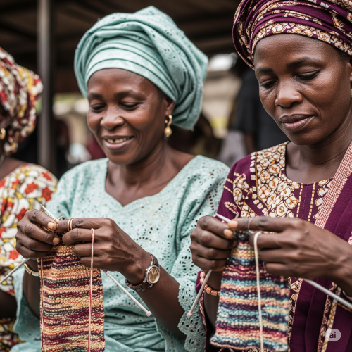
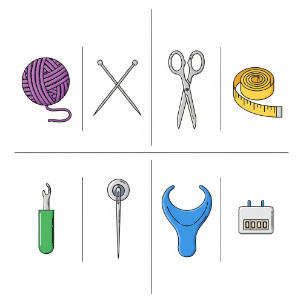

KNITTING
Meaning of Knitting
Knitting is the process of making cloth or fabric using yarn or wool and two long needles. The yarn is looped and pulled through to form rows of connected loops, which create the knitted fabric. It is one of the methods used in textile crafts.

Knitting is done by hand or with the help of a knitting machine.
Importance of Knitting
- It helps to develop creativity and patience.
- It is a form of relaxation or hobby.
- Knitting can be a source of income.
- It helps learners develop hand skills and coordination.
- Knitted items are used at home and can also be worn.
Tools and Materials Used in Knitting
Tools and materials are the essential items needed to create a finished product. The materials are the raw substances that are transformed into the final piece, while the tools are the instruments used to manipulate and shape those materials. Together, they enable the creative process to be completed effectively.

To do knitting, certain tools and materials are needed. These include:
- Yarn or Wool – This is the main material used to form the fabric.
- Knitting Needles – Two long needles used to loop and move the yarn.
- Scissors – Used for cutting the yarn.
- Measuring Tape – For taking measurements.
- Needle Threader – To make threading easier.
- Darning Needle/Yarn Needle – Used for finishing and sewing parts together.
- Stitch Holders – For holding stitches in place when necessary.
- Row Counter (optional) – To help keep track of rows made.
Basic Knitting Techniques
There are two main stitches in knitting. All other patterns come from combining these two:
- Knit Stitch – This is the basic stitch used in most knitting.
- Purl Stitch – This is the reverse of the knit stitch.
By combining the knit and purl stitches, different patterns such as ribbing, garter stitch, and stockinette stitch can be made.
Steps in Hand Knitting
- Casting On – This is how you begin. You put the first loops of yarn onto the needle.
- Knitting – Using the needles to create more rows by looping the yarn.
- Purling – Used to create different textures.
- Binding Off (Casting Off) – This is how you finish the work so it does not unravel.
- Finishing – Tucking in loose ends and shaping the item properly.
Common Knitted Items
Knitting can be used to make many useful things such as:
- Caps
- Table mats.
- Scarves.
- Socks.
- Hand gloves.
- Sweaters.
- Baby clothes.
- Dish cloths.
Design in Knitting
Before knitting an object, it is good to make a design or pattern of what you want to do. The design is like a guide. Example: You can draw a picture of a cap, and then use your yarn and needles to create it.
Some designs may also include decorations like lines, flowers, or animals made by using different colours of yarn.
Types of Yarn
- Cotton Yarn – Good for hot weather.
- Wool Yarn – Warmer and used for cold climates.
- Acrylic Yarn – Synthetic and cheap, used by beginners.
Simple Care for Knitted Items
- Do not wash roughly.
- Use mild soap.
- Dry flat to maintain shape.
- Keep away from sharp objects.
Safety Tips in Knitting
- Do not put knitting needles near the eyes.
- Always pack your tools after use.
- Avoid running or playing with needles.